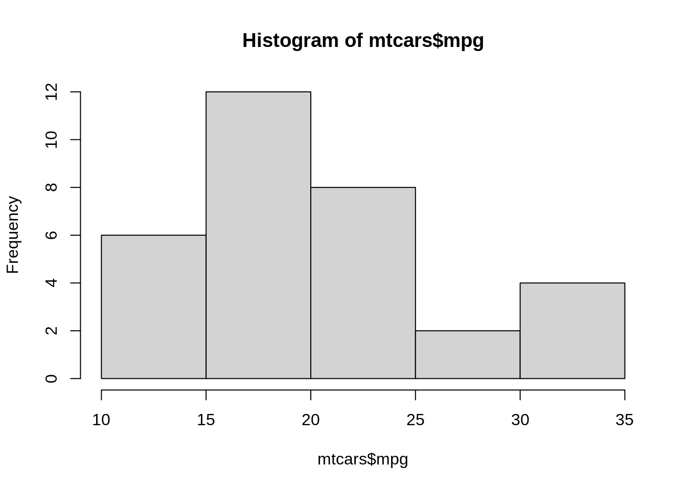

5 Rmarkdown
5.1 Introducción
Este documento se ha generado empleando Markdown y R. RMarkdown es recomendable para difundir análisis realizados con R en formato HTML, PDF y DOCX (Word), entre otros.
Markdown se diseñó inicialmente para la creación de páginas web a partir de documentos de texto de forma sencilla y rápida. Es lo que se conoce como un lenguaje de marcado ligero, tiene unas reglas sintácticas muy simples y se busca principalmente la facilidad de lectura. Posteriormente se fueron añadiendo funcionalidades, por ejemplo para incluir opciones de publicación en muchos otros formatos.
La implementación original de Markdown es de John Gruber, pero actualmente están disponibles múltiples dialectos. RMarkdown utiliza las extensiones de la sintaxis proporcionada por Pandoc, y adicionalmente permite la inclusión de código R.
Al renderizar un fichero RMarkdown se generará un documento que incluye el código R y los resultados incrustados en el documento1.
En RStudio basta con hacer clic en el botón Knit. En R se puede emplear la funcion render del paquete rmarkdown (por ejemplo render("Informe.Rmd")). También se puede abrir directamente el informe generado:
library(rmarkdown)
browseURL(url = render("dev/README_ggplot2.Rmd"))A continuación se darán algunos detalles sobre RMarkdown (y las extensiones Markdown de Pandoc que admite: notas al pie de página, tablas, citas, ecuaciones LaTeX, …). Para más información (incluyendo introducciones a Markdown y RMarkdown), se recomienda consultar alguna de las numerosas fuentes disponibles, comenzando por la web oficial http://rmarkdown.rstudio.com/.
También se dispone de información en la ayuda de RStudio:
- Help > Markdown Quick Reference
- Help > Cheatsheets > R Markdown Cheat Sheet
- Help > Cheatsheets > R Markdown Reference Guide
Otras fuentes permiten obtener documentación más detallada, como por ejemplo:
- Web del paquete
knitr(Xie 2018): https://yihui.name/knitr. - Xie, Allaire, and Grolemund (2018) : R Markdown: The Definitive Guide, https://bookdown.org/yihui/rmarkdown/.
- Extensiones RMarkdown de Pandoc: https://rmarkdown.rstudio.com/authoring_pandoc_markdown.html%23raw-tex.
5.2 Sintaxis de Markdown
Como ya se comentó la sintaxis de Markdown es muy secilla. El texto no marcado se renderiza como texto normal aunque es necesario dejar una línea en blanco para insertar un salto de línea. Las principales reglas de Markdown se sumarizan en la siguiente tabla:
| Escribir | o alternativamente | para obtener … |
|---|---|---|
|
|
Los distintos niveles de encabezados |
|
|
Cursiva |
|
|
Negrita |
|
|
Enlace |
|
|
|
|
|
|
|
|
|
|
|
|
|
|
Regla horizontal |
|
código en línea entre
comillas invertidas |
|
|
|
|
Es muy recomendable dejar siempre una linea de separación entre elementos distintos consecutivos.
5.3 Inclusión de código R
Se puede incluir código R entre los delimitadores ```{r} y ```. Por defecto, se mostrará el código, se evaluará y se mostrarán los resultados justo a continuación. Por ejemplo el siguiente código:
```{r}
head(mtcars[1:3])
summary(mtcars[1:3])
```produce:
head(mtcars[1:3])## mpg cyl disp
## Mazda RX4 21.0 6 160
## Mazda RX4 Wag 21.0 6 160
## Datsun 710 22.8 4 108
## Hornet 4 Drive 21.4 6 258
## Hornet Sportabout 18.7 8 360
## Valiant 18.1 6 225summary(mtcars[1:3])## mpg cyl disp
## Min. :10.40 Min. :4.000 Min. : 71.1
## 1st Qu.:15.43 1st Qu.:4.000 1st Qu.:120.8
## Median :19.20 Median :6.000 Median :196.3
## Mean :20.09 Mean :6.188 Mean :230.7
## 3rd Qu.:22.80 3rd Qu.:8.000 3rd Qu.:326.0
## Max. :33.90 Max. :8.000 Max. :472.0En RStudio pulsando “Ctrl + Alt + I” o en el icono correspondiente se incluye un trozo de código.
También se puede incluir código en línea empleando r código, por ejemplo r 2 + 2 produce 4.
5.3.1 Gráficos
Si el código genera un gráfico, este se incluirá en el documento justo después de donde fué generado(por defecto). Por ejemplo el siguiente gráfico:

se generó empleando:
```{r figura1, echo=FALSE}
hist(mtcars$mpg)
```aunque no se mostró previamente el código al haber establecido la opción ```{r, echo=FALSE}.
5.3.2 Opciones de bloques de código
Los trozos de código pueden tener nombre y opciones, se establecen en la cabecera de la forma ```{r nombre, op1, op2}. Para un listado de las opciones disponibles ver http://yihui.name/knitr/options (en la Sección 2.6 del libro de RMarkdown se incluye un resumen).
En RStudio se puede pulsar en los iconos en la parte superior derecha del bloque de código para establecer opciones, ejecutar todo el código anterior o sólo el correspondiente trozo.
Algunas opciones sobre evaluación y resultados:
eval: si=FALSEno se evalúa el código.echo: si=FALSEno se muestra el código.include: si=FALSEno se muestra el código ni ningún resultado.message, warning, error: oculta el correspondiente tipo de mensaje de R (los errores o warnings se mostrarán en la consola).cache: si se activa, guarda los resultados de la última evaluación y se reutilizan si no cambió el bloque de código (más detalles aquí). Puede ser de utilidad durante la redacción del documento para reducir el tiempo de renderizado (usándolo con cuidado y desactivándolo al terminar).
Algunas opciones sobre resultados gráficos:
fig.width, fig.height, fig.dim: dimensiones del dispositivo gráfico de R (no confundir con el tamaño del resultado), e.g.fig.width = 5.out.width, out.heigh: tamaño del gráfico, e.g.='80%'.fig.align:='left', 'center', 'right', establece la alineación.fig.cap: leyenda de la figura2.dev: dispositivo gráfico de R, por defecto='pdf'para LaTeX y'png'para HTML. Otras opciones son'svg'o'jpeg'.
Para establecer valores por defecto para todos los bloques de código se suele incluir uno de configuración al principio del documento, por ejemplo:
```{r, setup, include=FALSE}
knitr::opts_chunk$set(comment=NA, prompt=TRUE, dev='svg', fig.dim=c(5, 7), collapse=TRUE)
```5.4 Tablas
Las tablas en Markdown son de la forma:
| First Header | Second Header |
| ------------- | ------------- |
| Row1 Cell1 | Row1 Cell2 |
| Row2 Cell1 | Row2 Cell2 |Por ejemplo:
| Variable | Descripción |
|---|---|
| mpg | Millas / galón (EE.UU.) |
| cyl | Número de cilindros |
| disp | Desplazamiento (pulgadas cúbicas) |
| hp | Caballos de fuerza bruta |
| drat | Relación del eje trasero |
| wt | Peso (miles de libras) |
| qsec | Tiempo de 1/4 de milla |
| vs | Cilindros en V/Straight (0 = cilindros en V, 1 = cilindros en línea) |
| am | Tipo de transmisión (0 = automático, 1 = manual) |
| gear | Número de marchas (hacia adelante) |
| carb | Número de carburadores |
Para convertir resultados de R en tablas de una forma simple se puede emplear la función ktable del paquete knitr. Por ejemplo la Tabla anterior se obtuvo mediante el siguiente código:
knitr::kable(
head(mtcars),
caption = "Una kable knitr"
)Otros paquetes proporcionan opciones adicionales: xtable, stargazer, pander, tables y ascii.
5.5 Cabecera YAML
En un fichero RMarkdown se puede incluir metadatos en una cabecera en formato YAML (YAML Ain’t Markup Language, https://en.wikipedia.org/wiki/YAML), comenzando y terminando con tres guiones ---.
Los metadatos de YAML son típicamente opciones de renderizado consitentes en pares de etiquetas y valores separados por dos puntos.
Por ejemplo:
---
title: "Creación de contenidos con RMarkdown"
author: "Roy Yali"
date: 2022-01-03
output: html_document
---Aunque no siempre es necesario, se recomienda que los valores de texto se introduzcan entre comillas (se puede incluir código R en línea, como por ejemplo 2022-01-03 para obtener la fecha actual). Para valores lógicos se puede emplear yes/true y no/false para verdadero y falso, respectivamente.
Los valores pueden ser vectores, por ejemplo las siguientes opciones son equivalentes:
bibliography: [packages.bib]bibliography:
- packages.bibTambién pueden ser listas, añadiendo una sangría de dos espacios (importante):
output:
html_document:
toc: yes
toc_float: yes
pdf_document:
toc: yesEl campo output permite especificar el formato y las opciones de salida (por defecto se empleará la primera). Empleando este campo también se pueden especificar opciones gráficas para los bloques de código, por ejemplo:
output:
html_document:
fig_width: 7
fig_height: 6
fig_caption: trueLa mayoría de los campos YAML son opciones que el paquete rmarkdown le pasa a Pandoc.
Un ejemplo adicional3:
---
title: "Creación de contenidos con RMarkdown"
subtitle: "Curso de introducción a R"
author:
- name: "Rubén Fernández Casal (ruben.fcasal@udc.es)"
affiliation: "Universidade da Coruña"
- name: "Tomás R. Cotos Yáñez (tcotos@uvigo.es)"
affiliation: "Universidade de Vigo"
date: "2022-01-03"
logo: rmarkdown.png
output:
html_document:
toc: yes # incluir tabla de contenido
toc_float: yes # toc flotante a la izquierda
number_sections: yes # numerar secciones y subsecciones
code_folding: hide # por defecto el código aparecerá oculto
mathjax: local # emplea una copia local de MathJax, hay que establecer:
self_contained: false # las dependencias se guardan en ficheros externos
lib_dir: libs # directorio para librerías (Bootstrap, MathJax, ...)
pdf_document:
toc: yes
toc_depth: 2
keep_tex: yes # conservar fichero latex
---Como se puede deducir del ejemplo anterior, en el formato YAML podemos incluir comentarios con el carácter #
(por ejemplo para no emplear alguna de las opciones sin borrarla del encabezado).
En el Capítulo 3 del libro de RMarkdown se tiene información detallada sobre las opciones de los distintos formatos de salida (sobre ficheros HTML aquí y sobre PDF/LaTeX aquí).
5.6 Spin
Una forma rápida de crear este tipo de informes a partir de un fichero de código R es emplear la funcion
spin del paquete knitr (ver p.e. http://yihui.name/knitr/demo/stitch).
Para ello se debe comentar todo lo que no sea código R de una forma especial:
- El texto RMarkdown se comenta con
#'. Por ejemplo:#' # Este es un título de primer nivel #' ## Este es un título de segundo nivel - Las opciones de un trozo de código se comentan con
#+. Por ejemplo:#+ setup, include=FALSE opts_chunk$set(comment=NA, prompt=TRUE, dev='svg', fig.height=6, fig.width=6)
Para generar el informe se puede emplear la funcion spin del paquete knitr. Por ejemplo: spin("dev/knitr-spin.R").
También se podría abrir directamente el informe generado:
browseURL(url = knitr::spin("dev/knitr-spin.R"))Pero puede ser recomendable renderizarlo con rmarkdown:
library(rmarkdown)
browseURL(url = render(knitr::spin("dev/knitr-spin.R", knit = FALSE)))En RStudio basta con pulsar “Ctrl + Shift + K” o seleccionar File > Knit Document (en las últimas versiones también File > Compile Notebook o hacer clic en el icono correspondiente).
Por ejemplo, si se quiere convertir la salidas de un fichero de código de R a formato LaTeX (para añadirlas fácilmente a un documento en este formato), bastaría con incluir una cabecera de la forma:
#' ---
#' title: "Título"
#' author: "Autor"
#' date: "Fecha"
#' output:
#' pdf_document:
#' keep_tex: true
#' ---5.7 Extensiones RMarkdown de pandoc
Como ya se comentó, RMarkdown utiliza la sintaxis extendida proporcionada por Pandoc.
Por ejemplo, se pueden añadir subíndices y superíndices con sub~índices~ y super^índices^,
y notas al pie con ^[texto].
Podemos incluir expresiones matemáticas en formato LateX:
En linea escribiendo la expresión latex entre dos símbolos de dolar, por ejemplo
$\alpha, \beta, \gamma, \delta$resultaría en \(\alpha, \beta, \gamma, \delta\).En formato ecuación empleando dos pares de símbolos de dolar. Por ejemplo:
$$\Theta = \begin{pmatrix}\alpha & \beta\\ \gamma & \delta \end{pmatrix}$$resultaría en: \[\Theta = \begin{pmatrix}\alpha & \beta\\ \gamma & \delta \end{pmatrix}\]
También admite bibliografía, ver p.e. https://rmarkdown.rstudio.com/authoring_bibliographies_and_citations.html. Lo más cómodo puede ser emplear un archivo de bibliografía en formato BibTeX, lo que se describe con detalle aquí. Será necesario añadir un campo bibliography en la cabezera YAML, por ejemplo:
bibliography: bibliografia.bib
csl: apa.csl # opcionalSuponiendo que en el directorio de trabajo están los ficheros de bibliografía bibliografia.bib y de estilo apa.csl (ver http://citationstyles.org/, desde donde se pueden descargar distintos archivos de estilo).
Las referencias en el texto RMarkdown se incluyen con @referencia o [@referencia]. Pandoc generará el listado de referencias al final del documento, por lo que nos puede interesar insertar una última sección # Bibliografía {-} al generar documentos HTML (en PDF se hará automáticamente al emplear LaTeX). En RStudio se puede instalar el “Addin” citr para insertar citas a referencias bibliográficas en formato BibTeX.
Para más detalles de las extensiones de Pandoc ver por ejemplo https://rmarkdown.rstudio.com/authoring_pandoc_markdown.html%23raw-tex o el manual de Pandoc https://pandoc.org/MANUAL.html.
References
Se llama al paquete
knitrpara “tejer” el código de R y los resultados en un fichero Markdown, que posteriormente es procesado con pandoc↩︎Si se genera un documento en PDF/LaTeX el gráfico se mostrará en un entorno flotante y se puede ajustar la posición empleando la opción
fig.pos(por ejemplo,fig.pos = '!htb').↩︎Puede ser interesante ejecutar
str(rmarkdown::html_document())para ver un listado de todas las opciones disponibles dehtml_document↩︎